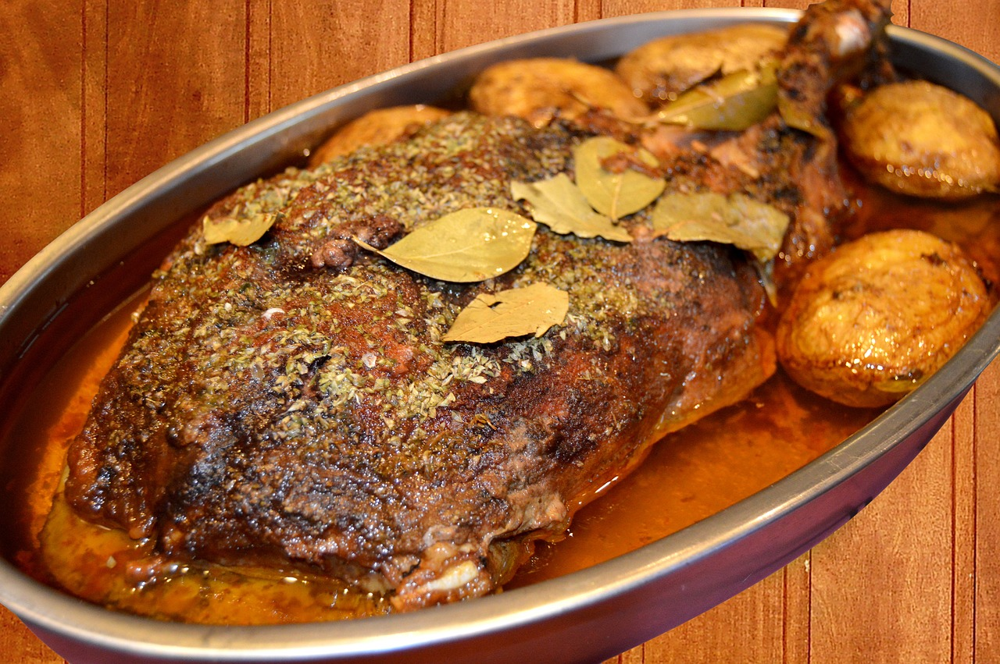

Roast Capon with Spices

This roast capon, flavored with a blend of ginger, cloves, and black pepper, reflects the medieval love of spiced meats.
The combination of vinegar and honey forms a rich glaze that caramelizes as the bird roasts, creating a balance of sweet, savory, and tangy flavors.
Capon was a prized bird, often served at feasts and special occasions.
Ingredients
- 1 whole capon (or chicken)
- 1/2 tsp ground ginger
- 1/4 tsp ground cloves
- 1/4 tsp black pepper
- 2 tbsp vinegar
- 1 tbsp honey
- Salt to taste
Steps
- Preheat oven to 375°F (190°C).
- Rub the capon with ginger, cloves, pepper, and salt.
- Mix vinegar and honey, then brush the mixture over the bird.
- Roast for 1.5 to 2 hours, basting occasionally with the vinegar-honey glaze, until the bird is golden brown and fully cooked.
- Let it rest before carving and serving.